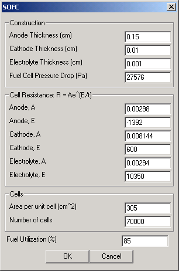
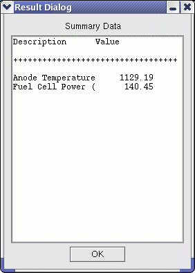

This module makes use of the Nernst equation and equations for activation, concentration, and ohmic losses to calculate fuel cell electrical output. Thermodynamic calculations are performed using a combination of equilibrium and heat exchanger calculations. The anode temperature is iterated until the thermodynamic output from the fuel cell matches the electrical output. The model obtained from DOE-NETL was developed for use in Aspen-Plus and employed a combination of Aspen-Plus functions and imbedded FORTRAN. The DOE model was subsequently re-implemented using C++ for use in the workbench. Enhancements from the NETL fuel cell model include the ability to use coal derived syngas as the fuel gas, operate at elevated pressure, remove the fuel gas reformer (not needed for IGCC), and use more robust equation solvers.
This module is coded only to handle CO and H2 coming into the anode as fuels. This is 'hardwired' in both the thermal and electrical calculations. The cathode 'air' stream, however, is not limited to just O2 and N2. The cathode composition is arbritrary - the code just pulls off enough O2 to react with the CO and H2 entering in the anode stream at the specified fuel utilization level.
|  | This user interface allows the user to manipulate fuel cell characteristics and perfomance. The user can input not only fuel cell size and quantity, but also the cell resistance and general construction of the unit. |
|  | This screen shows results after the module is executed. The first line shows the exiting Anode Temperature (outlet gas) while the second shows the Fuel Cell Power in MW.
|